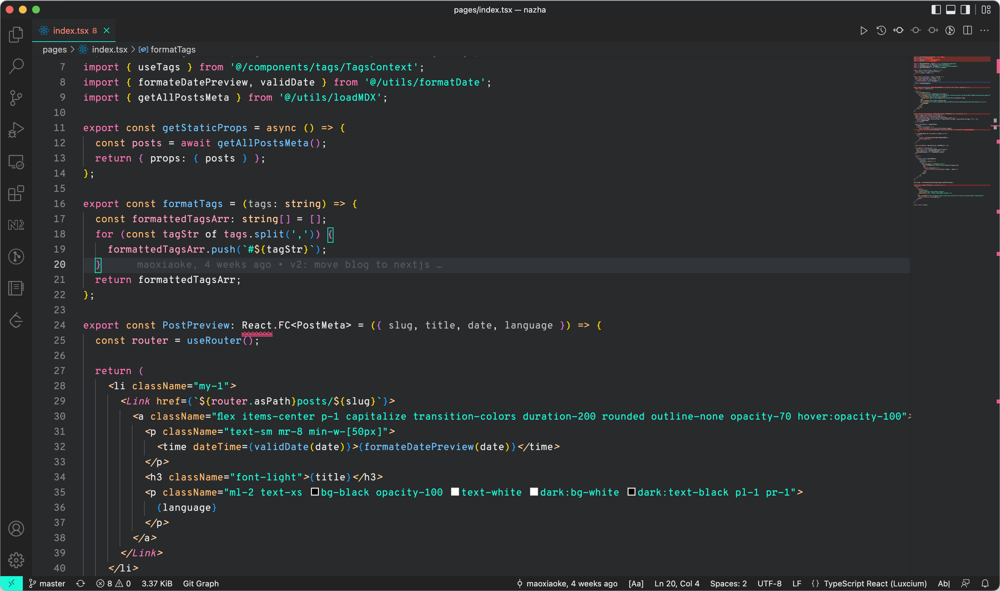
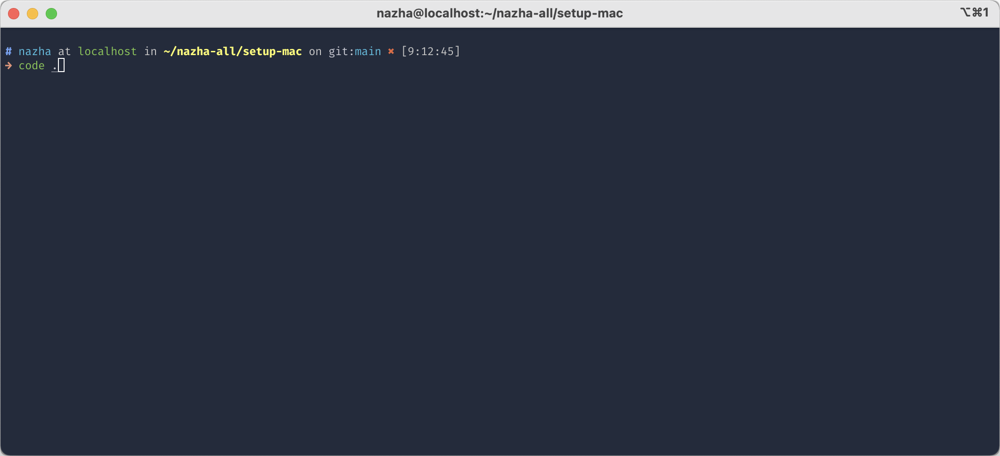

VS Code
Install from Homebrew, sign in, and let Settings Sync pull extensions, settings, and UI state back.
The development setup is intentionally narrow: install the editor, install the assistants, restore sync, and keep Node.js versioning on Volta. No pnpm detour, no extra package-manager layer.
The dev slice keeps Go, Pandoc, Jira CLI, and Volta together because they belong on a real workstation.
Install the tools, sign in, and pull the environment back into shape quickly.
Install from Homebrew, sign in, and let Settings Sync pull extensions, settings, and UI state back.
Install the current Codex app and reconnect the workflow you use for repo work.
Install the desktop app and restore the project-level workflow you use next to VS Code and Codex.
Install the current Google Antigravity app if it stays part of the coding loop, especially when you want a second agent workflow outside VS Code.
Keep Node.js version management in Volta so project runtimes stay clean without pulling pnpm into the base install.
Visual cues matter when rebuilding fast and verifying the terminal integration is back.
Sanity-check fonts, editor chrome, and overall feel after sync lands.

Confirm the VS Code command-line entry point is available from the shell.
